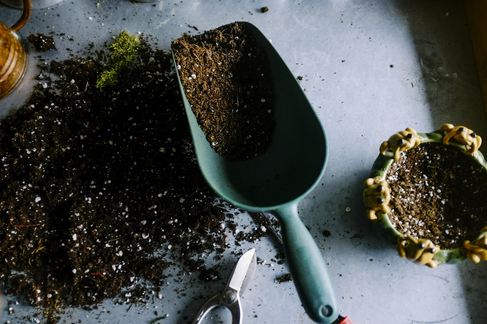
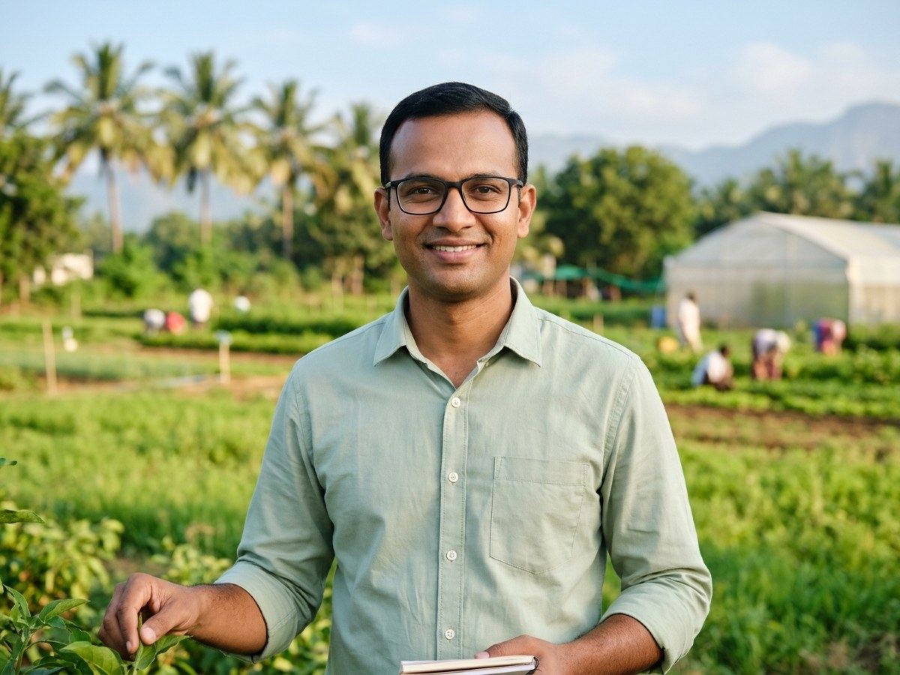
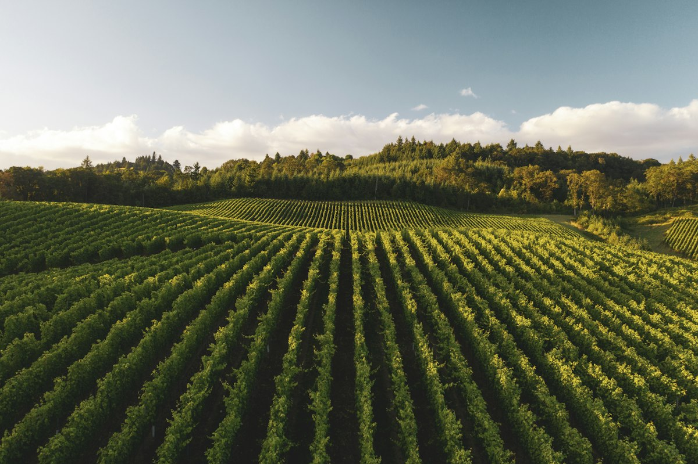
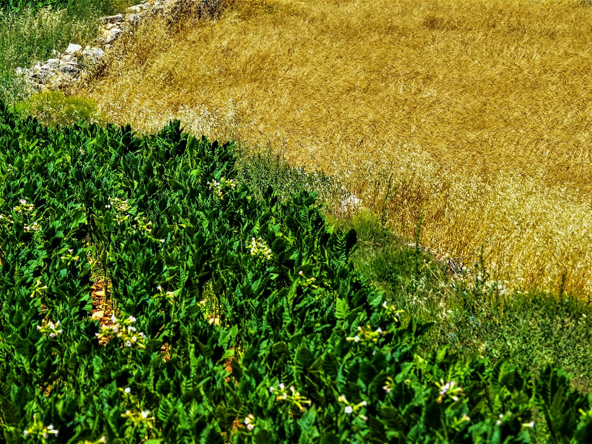

Dr. A. Raman
Board ChairpersonAgronomist with 32 years of field experience in river basin watershed management and cooperative rural development.
Cultivating collective resilience, equitable market access, and scientific agronomy across rural India.
GreenRoots was incorporated in 2018 under Part IXA of the Companies Act, established by 50 pioneering smallholder farmers who were determined to break the debt cycle imposed by local commission intermediaries.
What began as a single village grain aggregation pool has expanded into an autonomous producer enterprise supporting 2,500+ farmer shareholders across 85 villages. By pooling land acreage, synchronizing harvest schedules, and bargaining collectively, our members achieve up to 25% higher net farm-gate returns while supplying authentic, lab-tested food commodities directly to institutional buyers and conscious consumers.
Key chapters in our transition from a local farmer interest group to an award-winning Producer Company.
50 paddy and millet farmers in Thanjavur pool produce to hire shared transport, bypassing local commission agents and proving the economic power of collective bargaining.
Registered under Indian corporate statutes with 400 shareholder farmers, electing an all-grower board of directors and instituting democratic one-member-one-vote governance.
Signed long-term supply agreements with leading south-Indian flour millers and organic retail chains, eliminating secondary transit fees and stabilizing purchase rates.
Inaugurated a certified moisture-testing laboratory and a 5,000 MT climate-controlled warehouse to ensure year-round grain preservation with zero chemical fumigation.
Surpassed 2,500 active shareholder farmers across 85 villages with real-time digital weighbridge integration, SMS receipts, and dedicated climate-resilient millet clusters.

A prosperous rural agricultural landscape where smallholder farming families thrive with dignity, financial sovereignty, and ecological resilience.
To enhance farm household incomes through cooperative resource pooling, zero-intermediary market linkages, certified quality assurance, and sustainable soil stewardship.
Guided by NABARD producer organization mandates and the Companies Act, GreenRoots operates with measurable commitments to grower prosperity.
Direct farm-gate aggregation and transparent digital weighing eliminate predatory middlemen, returning 15% to 25% higher net realization to growers.
Restoring biological soil vitality through microbial inoculants and legume crop rotations, targeting an average 1.2% soil organic carbon level across all member plots by 2028.
Building solar-assisted village micro-warehouses and hermetic storage bins that reduce post-harvest grain losses from the industry standard 18% down to under 2%.
Maintaining a member-run community seed bank for climate-resilient heritage rice and traditional millets, cutting recurring seasonal input procurement costs.
All produce procurements are settled via direct electronic bank transfers (DBT) within 24 to 48 hours, creating audited financial records that unlock formal bank credit.
Incubating secondary agro-processing, digital soil testing labs, and custom machinery rental centers managed by local rural youth and women Self-Help Groups.
Experienced agricultural leaders, agronomists, and supply chain specialists steering our producer enterprise.
Agronomist with 32 years of field experience in river basin watershed management and cooperative rural development.
Agribusiness management professional specializing in farm-to-retail supply chain integration and direct buyer contracts.

Pioneered our village bio-input extension centers and conducts farmer field schools on regenerative crop rotation.
Oversees our 5,000 MT storage depot, digital weighbridge telemetry, and scheduled multi-ton freight distribution.

Agriculture is deeply vulnerable to shifting weather patterns. GreenRoots provides tangible technical and financial backing to help smallholders adapt to water scarcity, heat stress, and pest volatility.
Facilitating 1,200+ micro-irrigation installations saving 1.8 billion liters of groundwater annually.
3-year certified cluster transition assistance with subsidized microbial inputs and soil health testing.

True agricultural progress must uplift the entire rural ecosystem. Over 35% of our active producer members are women smallholders who manage pulse value addition, seed cleaning, and cold-pressed oil extraction units.
Our company reinvests a dedicated percentage of commercial surplus into village child nutrition camps, mobile soil-testing vans, and financial literacy workshops for farming families.
Join the GreenRoots MovementOur four-phase strategic expansion roadmap to scale rural farmer prosperity, establish value-addition mills, and pioneer ethical export linkages.
Enrolling 8,000 active grower shareholders and deploying 60 village-level primary aggregation kiosks with digital moisture telemetry.
Commissioning a 25-ton-per-day solar-powered millet de-hulling, grading, and flour milling facility in the Thanjavur Agro Industrial Complex.
Implementing lot-level QR code tracking across all retail packs, allowing consumers to scan and view the exact farmer profile, soil health, and harvest date.
Securing USDA Organic, EU Organic, and JAS export certifications for single-origin traditional paddy, turmeric, and black pepper consignments.
Explore opportunities to source directly, enroll as a producer shareholder, or support sustainable rural development.